Table of Contents
What is IPsec?
IPsec is one of the most important security protocols, being created to provide security in network and transport layer. I in both TCP and UDP protocols
IPsec protects data flows between two security gateways allowing two networks to connect to each other. It also includes a series of protocols to establish authentication between networks.
It’s main use is to create Private Networks (VPN).
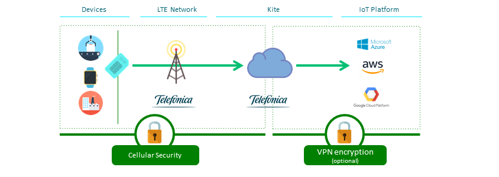
What will you need?
- Telefonica SIM with private APN (IPsec)
- A Cloud IPsec: AWS
What it does?
When you request your SIMs from Telefonica, you can request a private APN, which includes your SIMs in your oun new network. The goal is to establish a direct connection between this new network and the Cloud network.
The IPsec provides a secure connection that will function as if the devices of both networks are on the same network.

How to make your own IPsec VPN!
We believe in the importance of your data and the need to provide a safe network. For this reason, we provide all the necessary steps for you to create your own network
Request private APN to Telefonica
As we will assume if you are following this tutorial with us is because you have decided to make your connection through Telefonica coverage.
It is important for you to know that when you apply for new SIMS you can request the creation of your own APN (Access Point Name).
This new APN can be requested to have its own range of IP’s that will correspond to your own network. An example of networks that you can request are the following:
- Class A: up to 16777215 devices xxx.0.0.0/8
- Class B: up to 65535 devices xxx.xxx.0.0/16
- Class C: up to 255 devices xxx.xxx.xxx.0/24
where you can choose the desired range 192.164.0.0/24 from 192.164.0.0 to 192.164.0.255 IP addres.
In addition to the range you must facilitate the configuration of the 2 gateways of the Cloud network you are using. Although this already depends on the Cloud. For AWS you can follow the tutorial

other clouds tutorials under development …
IPsec step by step in AWS
Table of Contents IPsec in AWS

Configure IPsec step by step in AWS
In the Amazon nomenclature the client servers are located in the virtual machines of the client’s Virtual Private Cloud, while Telefonica’s network will act as “Local Network”.
In other words, the IP pools of the IoT mobile devices belong to the Address Space of the client’s Local Network.
On Amazon, IPsec tunnels are created using VPN Connections. When a VPN connection is created between the Virtual Private Gateway in the cloud and the Customer Gateway (Telefonica Encrypter), Amazon, to provide redundancy on its side, automatically assigns two public IPs to its Virtual Private Gateway which will be the peer IPsec on the Amazon side.
For more details see the following diagram
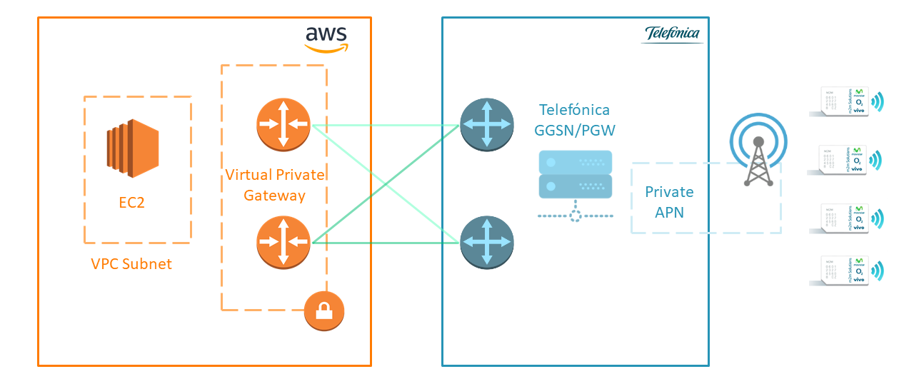
The following tutorial intends to be a simple guide to configure the IPsec between an EC2 machine and your pool of SIMs from the Telefonica’s network.

1. Create VPC
What Is Amazon VPC?
Amazon Virtual Private Cloud (Amazon VPC) enables you to launch AWS resources into a virtual network that you’ve defined. This virtual network closely resembles a traditional network that you’d operate in your own data center.
Go to VPC Dashboard / Virtual Private Cloud / Your VPCs / Select: Create VPC 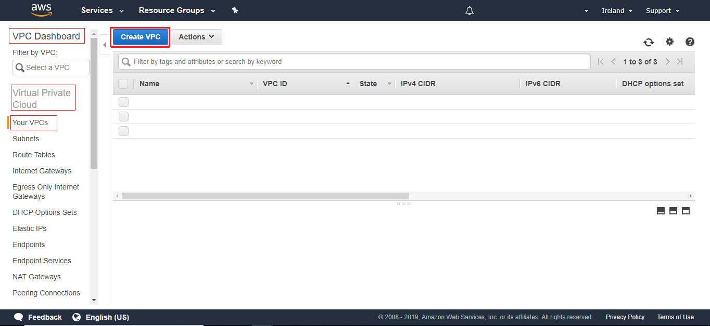
Complet the next fields:
Name tag: Select a name for identify your VPC in the next steps
IPv4 CIDR block: Select your network range. It must not match the range of your SIM pool
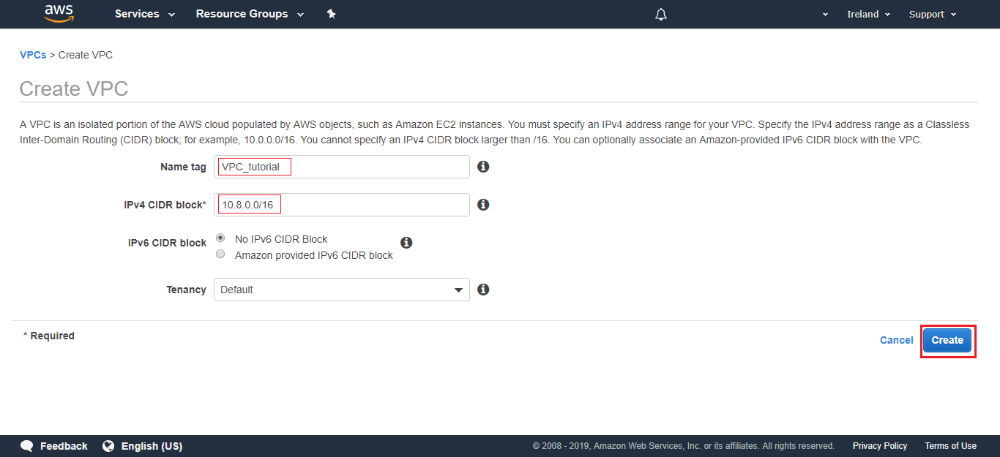
Click on create.
Now you can see the new VPC 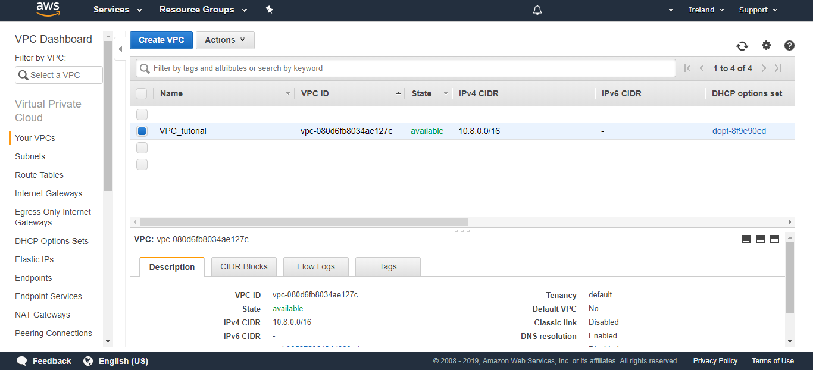

2. Create VPG
Go to VPC Dashboard / Virtual Private Network / Virtual Private Gateway / Select: Create Virtual Private Gateway 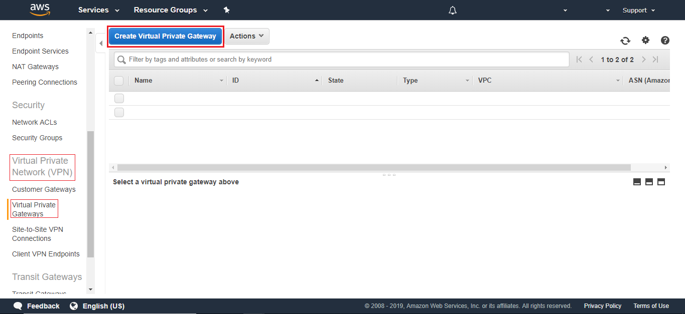
Name tag: Select a name for identify your VPG in the next steps 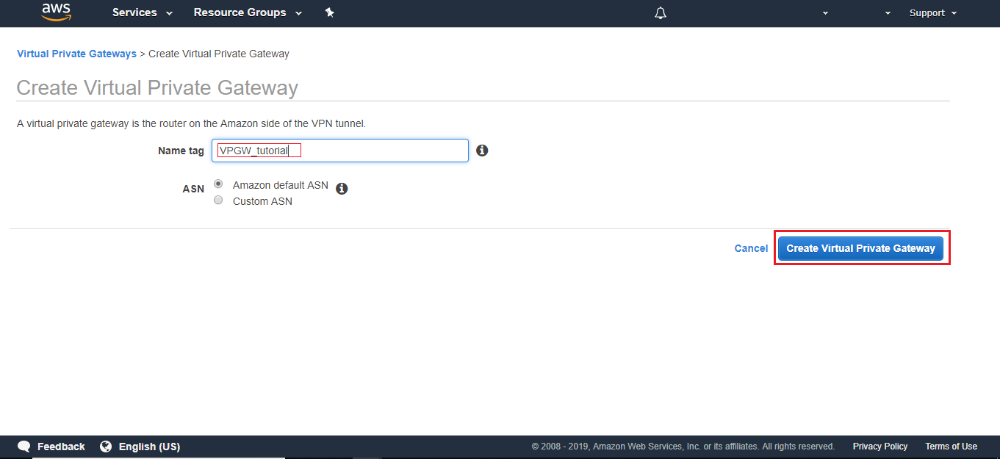
Click on create.
Now you can see the new VP Gateway 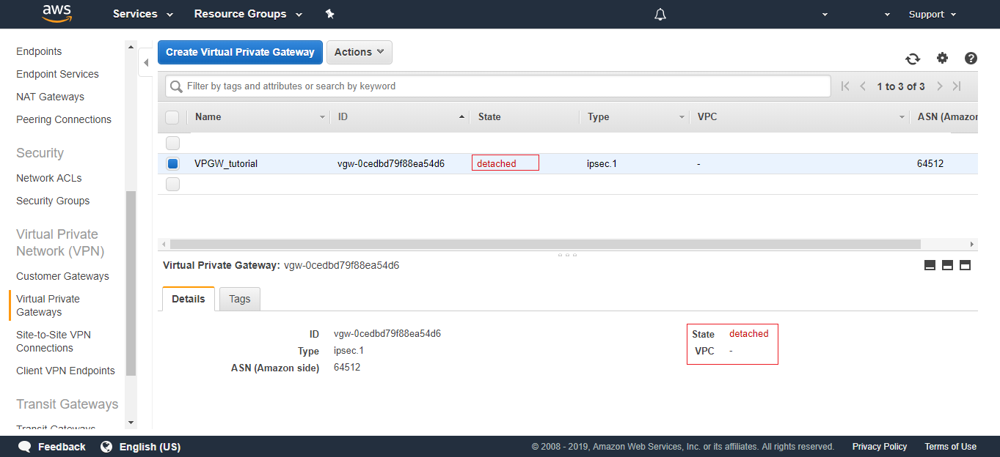
Now you can see the new VPG and read in red detached
2.1. Attach VPG to VPC
In the last page **VPC Dashboard / Virtual Private Network / Virtual Private Gateway **
Select your VPG: ** Actions button /** Select: Attach to VPC
Select your VPC Name tag 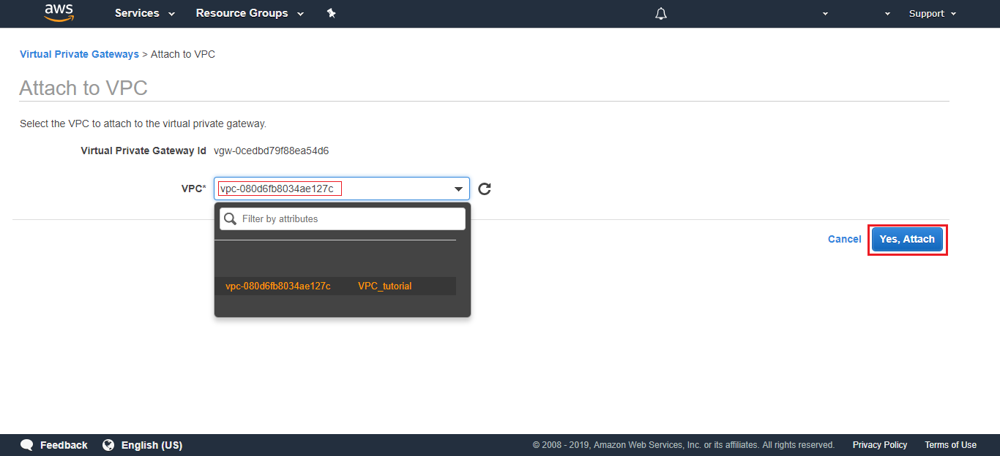
Click on Yes,Attach
wait a moment until it appears attached

3. Enable propagation of routes from VPG
This means that in our VPC the routes to our local network automatically point to the Virtual Private Gateway:
3.1. Edit Route Table
To enable instances in your VPC to reach your customer gateway, you must configure your route table to include the routes used by your VPN connection and point them to your virtual private gateway. You can enable route propagation for your route table to automatically propagate those routes to the table for you.
Go to VPC Dashboard / Virtual Private Cloud / Route Tables
Select the table with your VPC and in the bottom menu select the tab:
Route Propagation / Edit route propagation 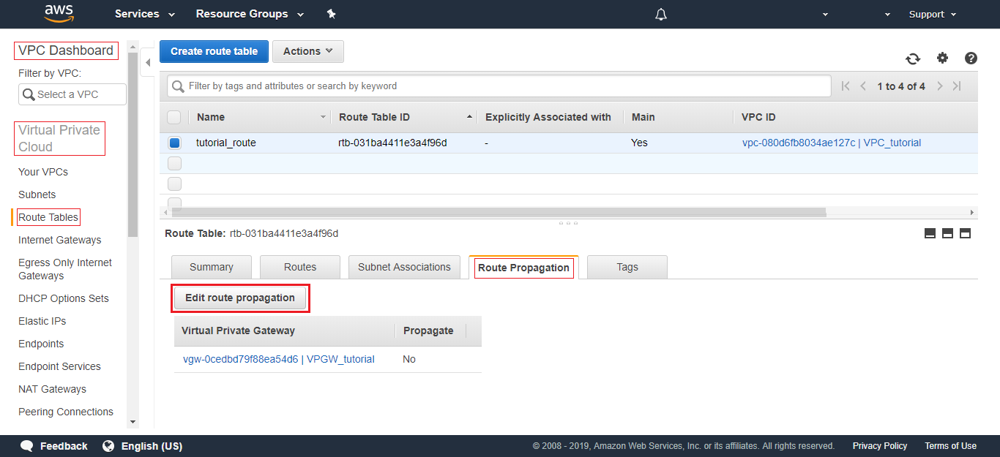
a new window opens to activate it 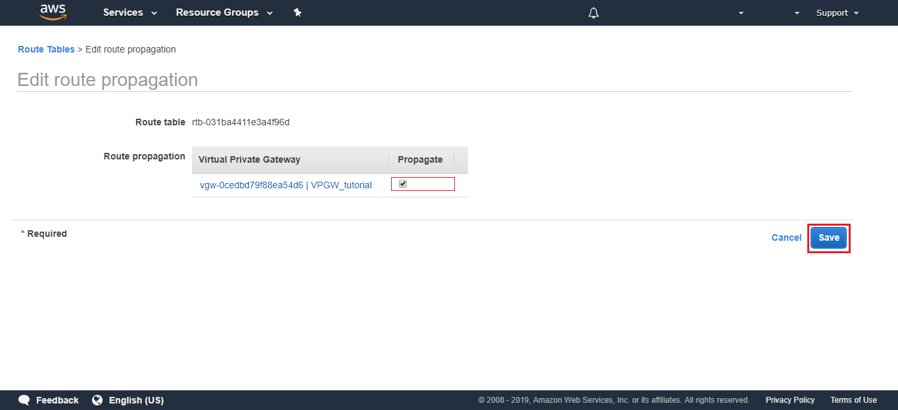
Click on Save Now you can see route propagate to YES

4. Create 2 Custom Gateway
To be able to connect to the Telefonica network it is necessary to establish 2 Gateway with the 2 Telefonica Encrypters.
Go to VPC Dashboard / Virtual Private Network (VPN) / Customer Gateway / Select: Create Customer Gateway 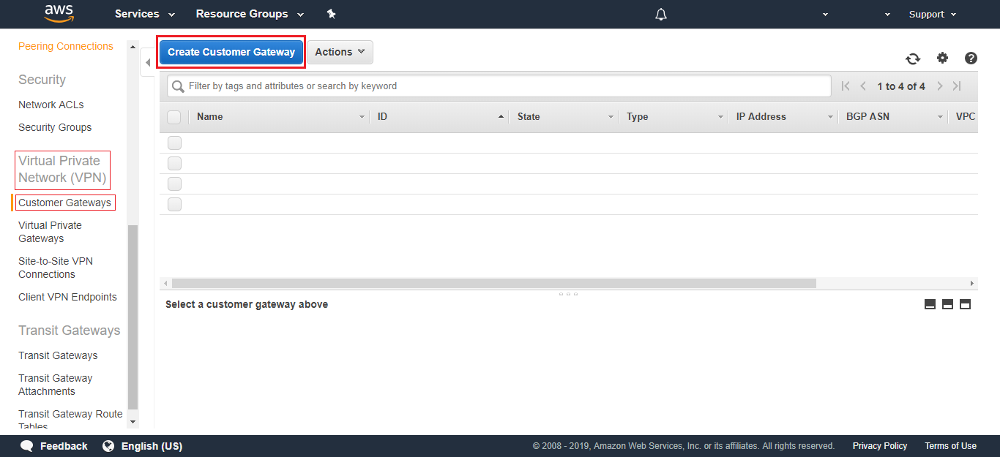
complete the fields with the following information:
-
Encrypter3: -Name: TEF_Cifra3 -Routing: Dynamic -BGP ASN: 3352 -IP Address: 213.0.185.6
-
Encrypter4: -Name: TEF_Cifra4 -Routing: Dynamic -BGP ASN: 3352 -IP Address: 213.0.185.8
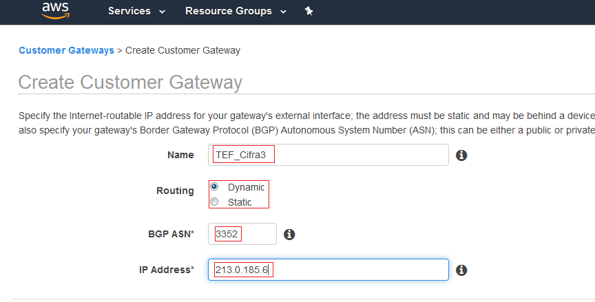
Once the Customers Gateway corresponding to the Telefonica Encrypters have been created, they appear as shown below:
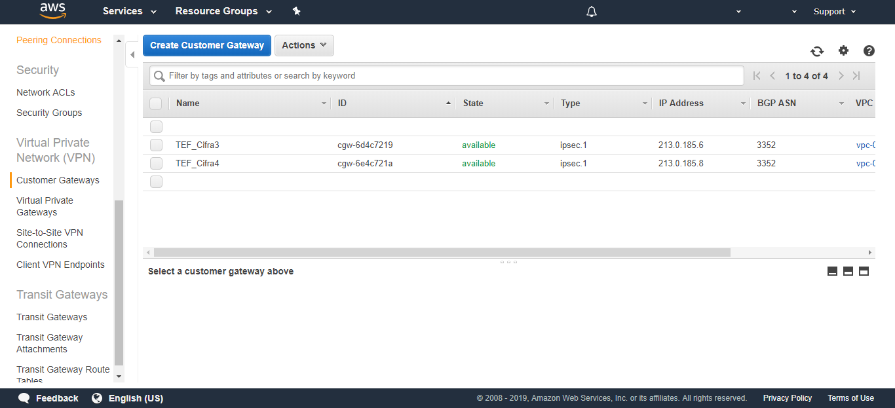

5. Create 2 VPN Connection
You must create a VPN connection for each of the two customer gateways corresponding to Telefonica’s two encryption devices.
Go to VPC Dashboard / Virtual Private Network (VPN) / Site-to-Site VPN / Select: Create VPN Connection
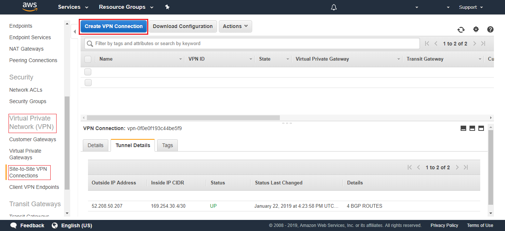
Name tag: Select a name for identify your VPC connection in the next steps
VPG Select your VPN Gateway attached to your VPC
Customer Gateway Existing
Customer Gateway ID Select each of the two Cusotmers Gateway created
Routing Options Dynamic
for the first VPN connection:
Inside IP CIDR for Tunnel 1 169.254.30.0/30
Inside IP CIDR for Tunnel 2 169.254.30.4/30
and for the second VPN connection:
Inside IP CIDR for Tunnel 1 169.254.40.0/30
Inside IP CIDR for Tunnel 2 169.254.40.4/30
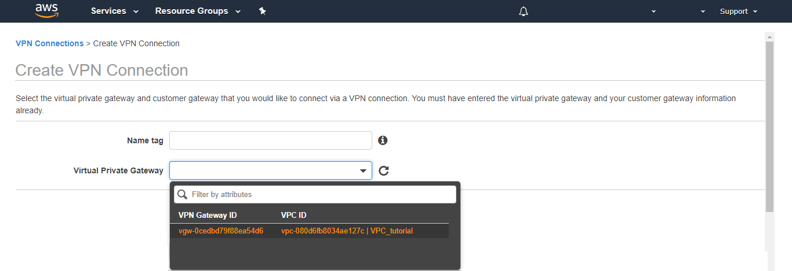 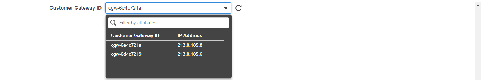 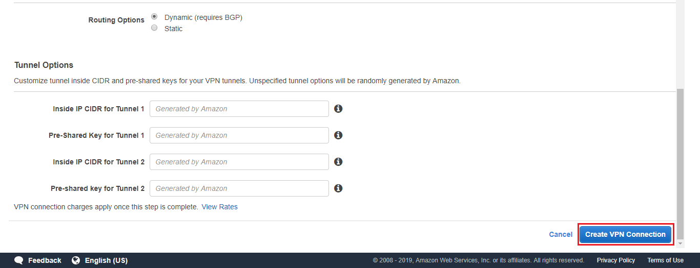
Click on Create VPN Connection
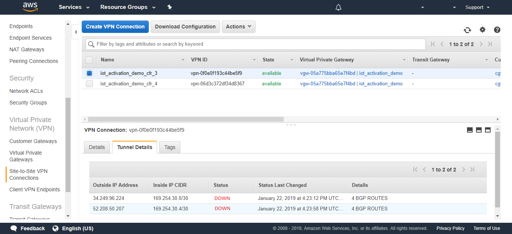
Now you can read in the tab Tunnel Detail the status in red DOWN
This will hold, until you talk to Telefonica and send them the configuration.
5.1. Download Configuration
Amazon offers the possibility of downloading a configuration file from the Customer Gateway, as it is necessary to facilitate configuration to Telefonica.
Clicking on each encrypter, select the tab Download Configuration and complete like the following example 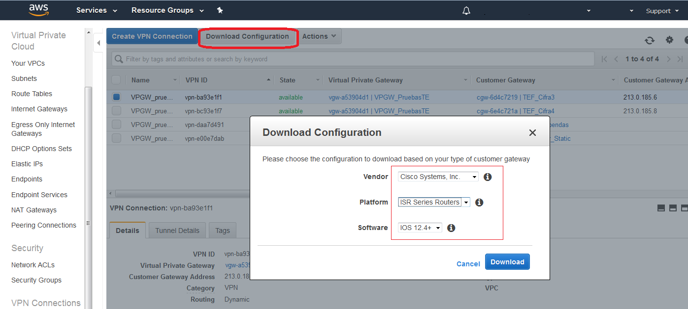
you keep these two files that they are necessary to configure the other end of the tunnel

6. Create a EC2 instance
Amazon Elastic Compute Cloud (Amazon EC2) is a web service that provides secure, resizable compute capacity in the cloud. It is designed to make web-scale cloud computing easier for developers.
6.1. Launch EC2 instance
Go to EC2 Dashboard / Instances / Instances / Select: Launch Instance 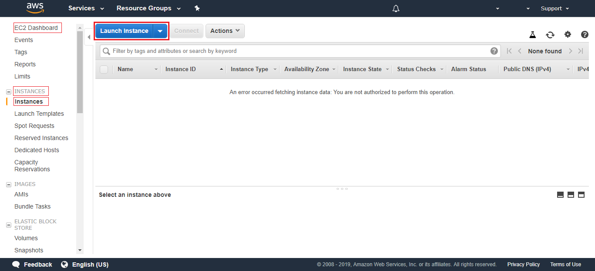
Step 1: Choose the SO 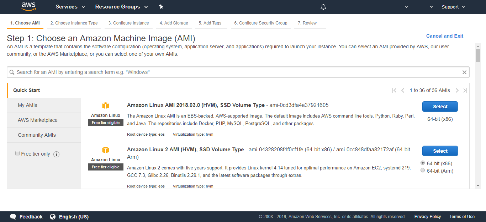 Click Next
Step 2: Choose the machine size 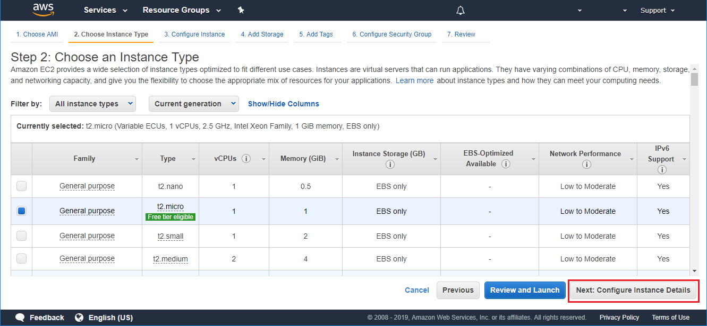 Click Next
Step 3: Configure the machine connection
Network Select your VPC
Subnet Create a new Subnet (look like y the next step 6.1)
Auto-assigns Public IP Enable
 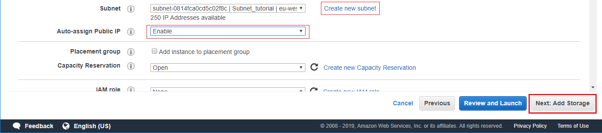
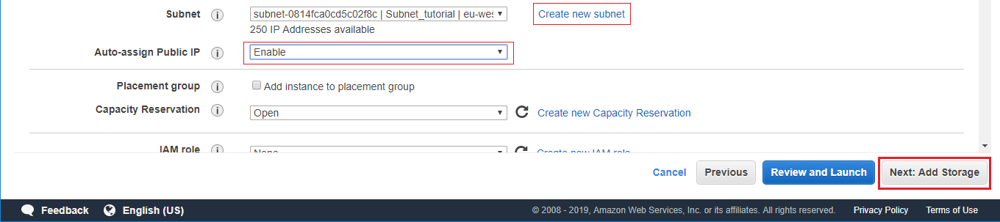
Click Next until Step 6
Step 6: Open a Port to test the connection
Assign a security group Create a new security group Security group name Select a name for identify your Security group in the next steps
Add Rule Custom ICMP like the picture for enable the ping response


6.1.a Create Subnet
Name tag Select a name for identify your Subnet in the next steps
VPC Select your VPC
IPv4 CIDR block use the same IP range but choose a smaller mask


Click on Create
Now your machine is running, but it is connected to a virtual network. You must configurate a internet gateway

6.2. Enable Internet Connection EC2 instance
Go to VPC Dashboard / Virtual Private Cloud / Internet Gateway / Select: Create internet gateway 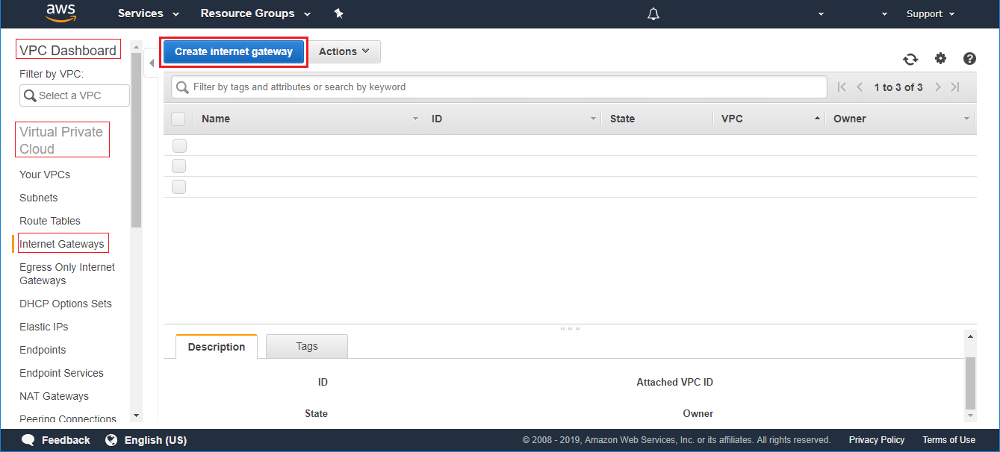
Name tag Select a name for identify your Subnet in the next steps 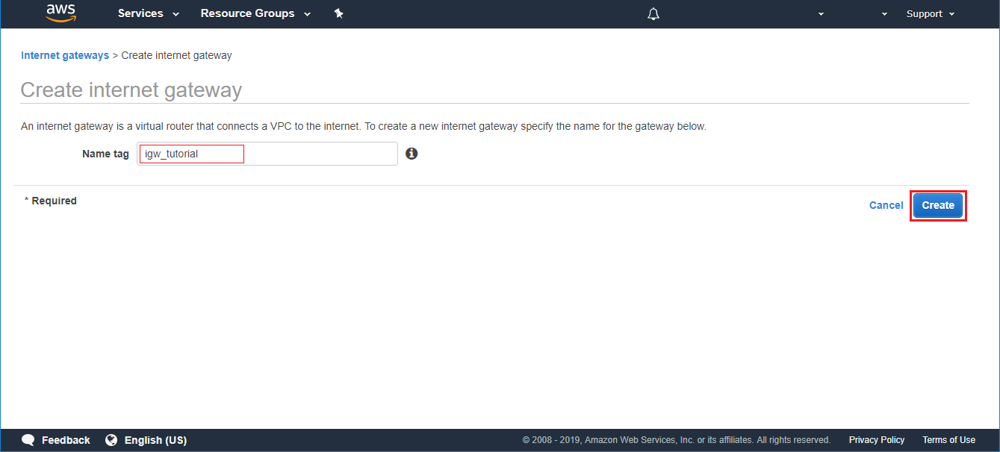
Click on Create
Now select the Internet Gateway and select attach to VPC on Actions tab 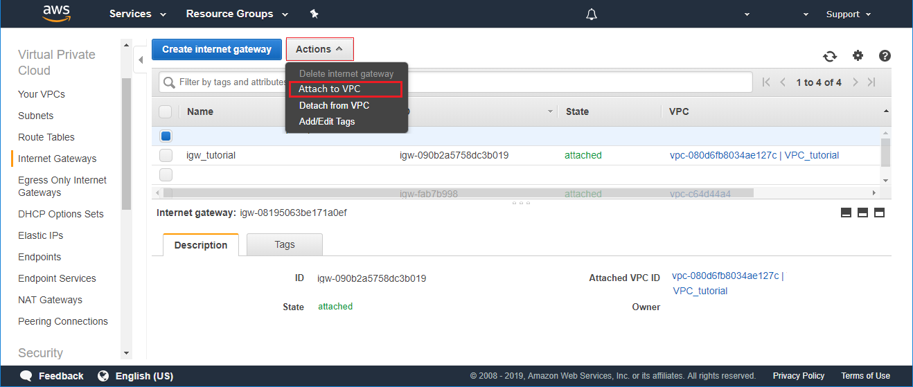
VPC Select the VPC
 Click on Attach
Click on Attach
Now you have access to an internet gateway, you only have to modify the rules of the gateway to allow traffic.
Go to VPC Dashboard / Virtual Private Cloud / Route Table / Select the route table of the VPC
on the tab Routes click on Edit Routes 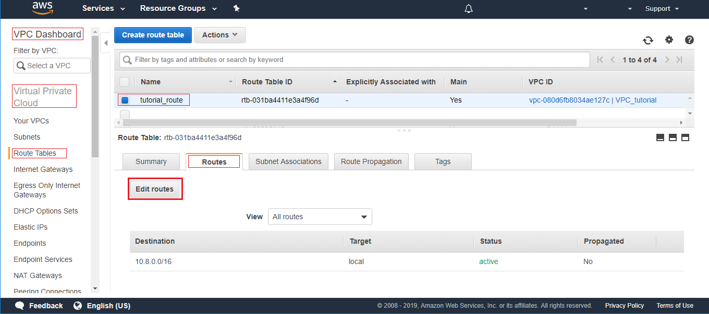
add a new route with the interface 0.0.0.0/0
and select the internet gateway like target.